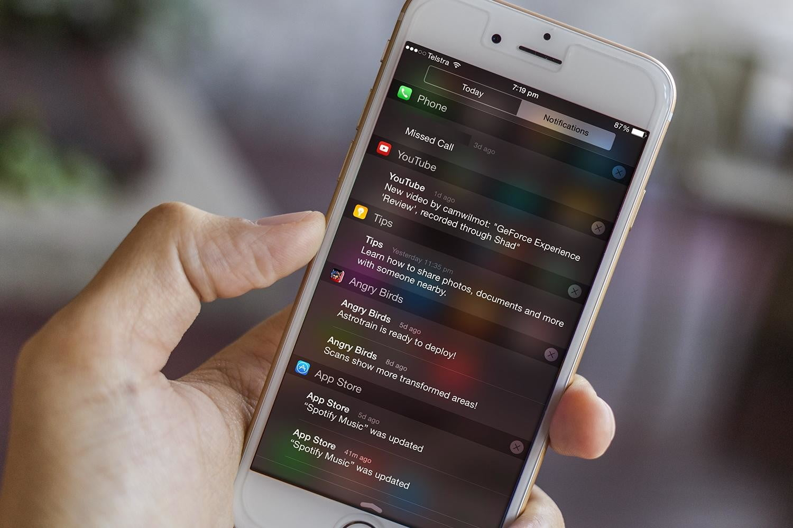

The best revision tip is to start revising early... but if you don’t do this, here are some useful tips to follow…
Put your phone away! It is so easy to get distracted with your phone sitting next to you, so turn off notifications or put the phone away in a draw to stop yourself getting tempted.

Practice! Past papers and practicing questions are the key to success. Working in timed conditions (like you would in an exam) is also very helpful.
Make a timetable or set deadlines for yourself. This will ensure all your revision and work is done in time, and should hopefully focus your revision and prevent procastination!